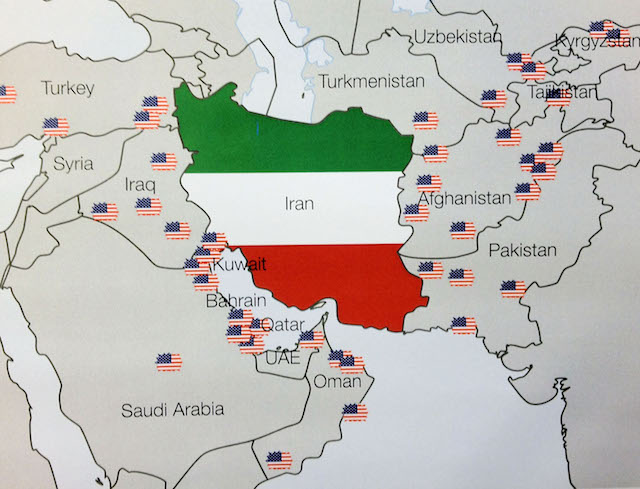

2017-06-17 08:00
There was a vote last Thursday on S.722, “Countering Iran’s Destabilizing Activities Act of 2017,” a bill which slaps economic sanctions on both Russia and Iran. The vote passed almost unanimously in the Senate, except for two senators with fiercely independent streaks. One of them was Rand Paul. The other was Bernie Sanders.
On his website Sanders wrote that, if fashioned as a separate bill, he would have voted for Russian sanctions and noted he has previously voted for sanctions on Iran. But the bill, he wrote, “could endanger the very important nuclear agreement that was signed between the United States, its partners and Iran in 2015.”
Massachusetts senators Warren and Markey, however, both enthusiastically voted for the sanctions, as did every Democrat in the Senate. Warren had previously been opposed to Iran sanctions and supported the Iran deal. But on Thursday she voted with the herd to both jeopardize the work John Kerry had done and to wage economic war on Iran. In fact, Warren not only voted with the herd but was a co-sponsor.
Economic sanctions are acts of war. The Council on Foreign Relations characterizes them as alternatives to war, but the targets of sanctions understand quite well what they really are. When, in 2015, the EU slapped sanctions on Russia, one Russian banker called it “economic war.” And North Korea has never minced words: “We consider now any kind of economic sanctions to be taken by the Security Council as a declaration of war.”
As economic acts of war, sanctions can provoke military responses just as easily as bombing. Students of history may recall that reparations and economic sanctions against Germany following World War I fed both German nationalism and militarism leading up to World War II. Writing in Foreign Policy Journal, Gilles van Nederveen wrote:
Sanctions can lead to war “if the state is militarized and the central government is backed to the wall. Consider an example of pre-World War II Japan. American and Japanese militaries prepared for a confrontation throughout the twenties, but real tensions did not start until the 1931 invasion of Manchuria by Japan. At the outset of U.S.-imposed oil blockade in 1940, Japan estimated that it had a fuel reserve of just under two years. The Imperial Japanese Navy drafted plans to seize the oil fields in the Dutch East Indies (present day Indonesia) in order to maintain steady supply of oil and its military strength. International organizations like the League of Nations were powerless in curtailing aggression during the thirties. After the initial oil blockade in 1940, each Japanese move was met with yet another U.S. embargo: scrap metal, access to the Panama Canal, and finally, the U.S. froze all Japanese accounts in the US, effectively putting Japan on the collision course with the U.S.”
Sanctions are an overused tool of both neoconservatives and neoliberals. The Heritage Foundation pointed out in 1997 that, during Bill Clinton’s administration, Clinton managed to slap sanctions on 42% of the world’s population. Of course, this was twenty years ago when Conservatives were out of power and posing as reasonable statesmen. Fast forward twenty years: they’re back in power and they’re leading the charge themselves.

Economic sanctions are often accompanied by physical blockades, embargoes, interdiction of shipments on the high seas, proxy wars, and covert warfare. All of these apply to Iran. Speaking at the Carnegie Endowment, former Treasury Secretary Jacob Lew described sanctions in the same terms as precision bombing:
“The sanctions we employ today are different. They are informed by financial intelligence, strategically designed, and implemented with our public and private partners to focus pressure on bad actors and create clear incentives to end malign behavior, while limiting collateral impact.”
But economic sanctions do not limit collateral impact. Sanctions are every bit as lethal as bunker-busters. On May 12, 1996 — long before Obama awarded her a Presidential Medal — Madeline Albright was asked if the deaths of half a million Iraqi children from U.S. economic sanctions were worth it. Bill Clinton’s Secretary of State didn’t shed a tear or miss a beat when she answered “yes.”
Van Nederveen points out that during the Cold War — a time when there was no single superpower — economic sanctions had no teeth. But now that the U.S. is the biggest, meanest dog in the kennel it can do whatever it wants, whenever it wants. Returning to the Carnegie’s black-tie event, Obama’s Treasury Secretary went on to describe the restraint that the U.S. must show once it forces other nations to submit to its sanctions:
“To preserve the effectiveness of sanctions over the long term, we must use them wisely. We must clearly articulate our goals, and we must provide relief when those goals are met.”
But no such restraint was ever exercised with Iran following the nuclear deal. Virtually the moment the ink had dried on the deal, the United States began undermining it. Last year Roger Cohen, writing in the New York Times, described the Obama administrations sabotage of its own accord:
“But today America is undermining that balance, reinforcing Iranian hawks and putting the hard-won deal that reversed Iran’s steady advance to the nuclear threshold at risk. It’s a shoot-yourself-in-the-foot policy after a major diplomatic achievement.”
The professed American love of democracy and diplomacy now only provokes derision throughout most of the world. American power is out of control and neither Conservatives nor Liberals have any great urge to rein it in. American Exceptionalism, AIPAC, and tantalizing Saudi defense dollars are the real hammers that forge our foreign and military policy. It is in moments like Thursday’s vote that we see how bi-partisan American imperialism and aggression really is.
Bernie Sanders was right. The vote by every Democratic senator jeopardizes the Iran nuclear deal and creates a more precarious world. Here in Massachusetts we just learned our so-called “progressive” senators just couldn’t resist waving the flag and voting for more American bullying.
Americans might want to imagine the day when China slaps economic sanctions on the United States. And it is coming. Our global militarism has made us a “bad actor” that must be taught a lesson by the next superpower. Like Germany a century ago, when that day comes there is no doubt that Americans will regard those sanctions as an act of war.